Skilled Business Analyst and Business Intelligence Analyst with expertise in utilizing advanced analytical tools, such as SQL, Excel, Tableau and Microsoft Power BI. I hold certifications from Google, IBM, and Microsoft, demonstrating proficiency in data analysis methodologies, statistical analysis, and data visualization.
With a focus on optimizing business processes, I have collaborated with cross-functional teams to identify key performance indicators and provide actionable recommendations. My strong attention to detail and problem-solving skills enable data-driven decision-making and enhance operational efficiency. I am dedicated to staying updated with the latest advancements in data analysis, ensuring I am well-equipped to tackle complex data challenges and drive organizational success.
If you seek a results-oriented data analyst capable of delivering actionable insights and value through data analysis, I am ready to contribute to your organization's growth
View Linkedin
In my GitHub repository, you can find comprehensive exploratory data analysis (EDA) conducted using SQL Server. Explore a diverse range of datasets, along with the corresponding SQL scripts and queries used to analyze, visualize, and derive insights from the data. Unlock valuable EDA techniques and enhance your data exploration skills
For a comprehensive view of all the visualizations, reports, and dashboards created in Tableau, refer to my Tableau Public profile

 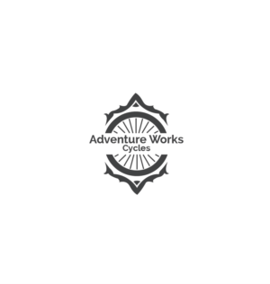
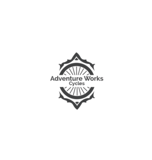
Uncovered insights in AdventureWorks through SQL Server's exploratory data analysis (EDA). Employed SQL queries and visualizations to reveal patterns, trends, and relationships, enhancing decision-making and understanding of the dataset
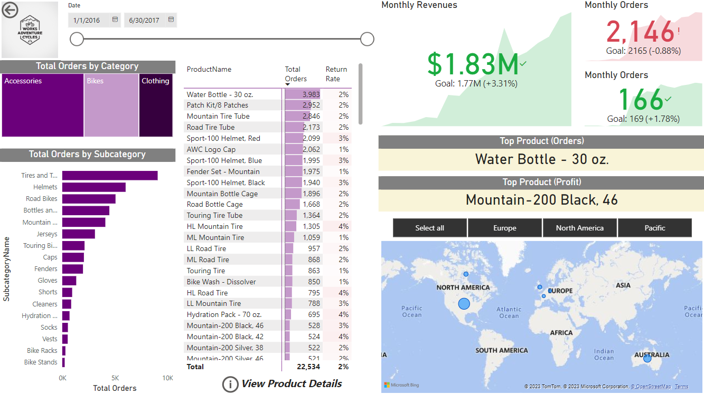
Utilized the power of a comprehensive Power BI report for AdventureWorks, where data is expertly modeled and analyzed. Utilizing KPIs, calculated columns, measures, bookmarks, AI tools, and more, gained invaluable insights into the company's performance. Forecasted and analyzed data with precision, providing a holistic view that aids in making informed business decisions
Efficiently cleaned and preprocessed data in Maven Market using SQL Server. Employed SQL queries and transformations to handle missing values, outliers, and inconsistencies, ensuring high-quality data for analysis and decision-making
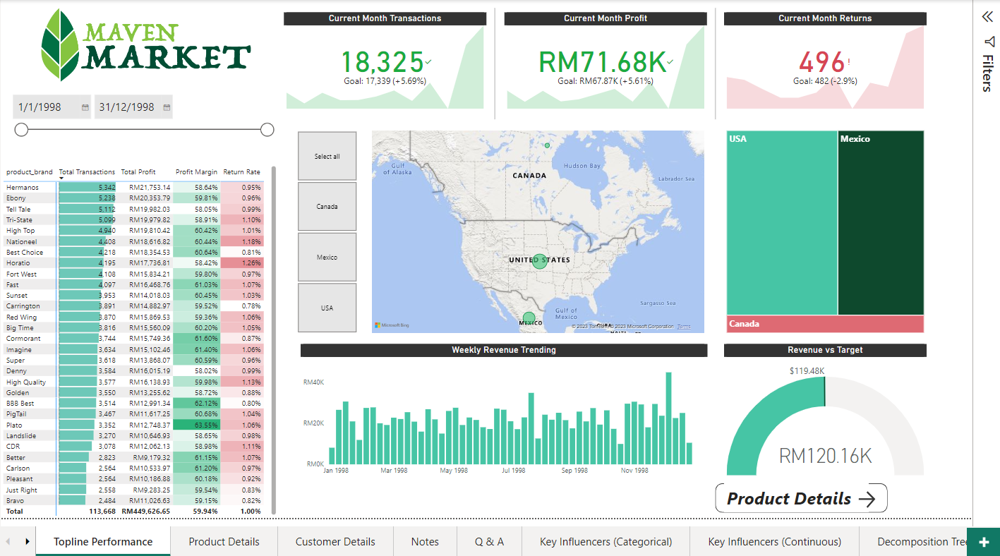
Experienceed Maven Market's comprehensive Power BI report, incorporating expert data modeling, KPIs, calculated columns, measures, bookmarks, AI tools, and more. Gained a holistic view of company performance, forecast future trends, and made data-driven decisions with confidence
Thoroughly cleansed and preprocessed COVID-19 project data in SQL Server. Utilized SQL queries to handle missing values, outliers, and inconsistencies, ensuring accurate and reliable data for analysis and reporting
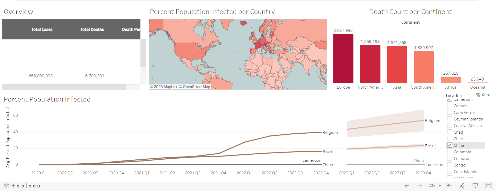
Explored an insightful Tableau visualization for the COVID-19 project. With meticulously modeled data, leverage KPIs, calculated fields, and other powerful features to gain valuable insights, track trends, and analyze the impact of the pandemic

Unlocked insights at Ben's Pizzeria with SQL queries. Dashboard 1: Tracked orders, sales, average order value, sales by category, top items, and analyzed order patterns. Dashboard 2: Monitored ingredient quantities, costs, and calculatee pizza costs. Dashboard 3: Analyzee staff costs and hours worked
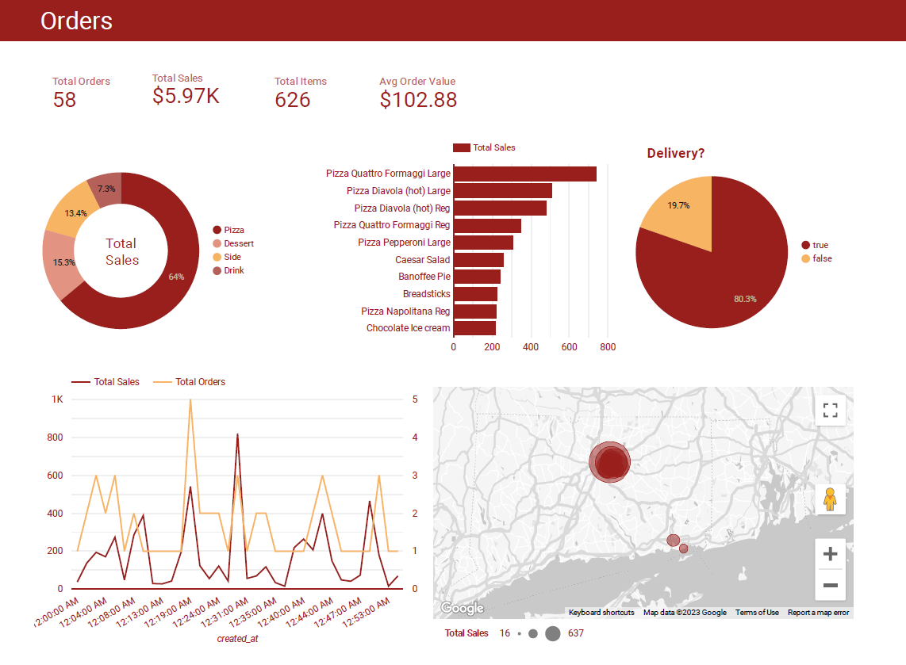
Explored a dynamic Google Studio Looker dashboard for Ben's Pizzeria. Tracked orders, sales, average order value, sales by category, top items, analyzed order patterns, ingredient quantities, costs, pizza costs, and staff details
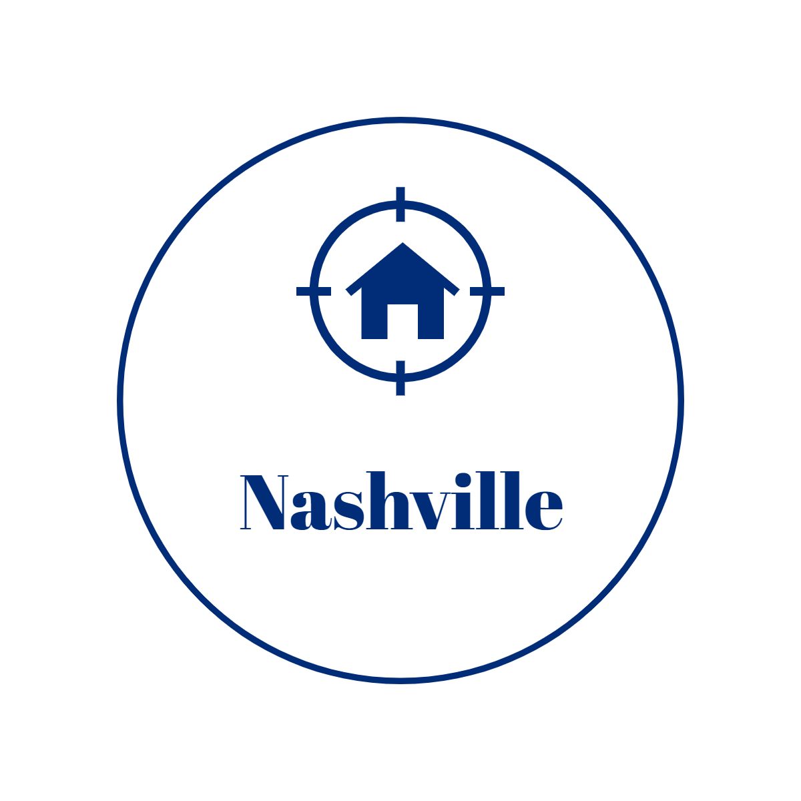
Cleaned data and uncovered valuable insights with data exploration in SQL Server for the Nashville Housing project. Analyze housing trends, and prices to gain a comprehensive understanding of the real estate landscape
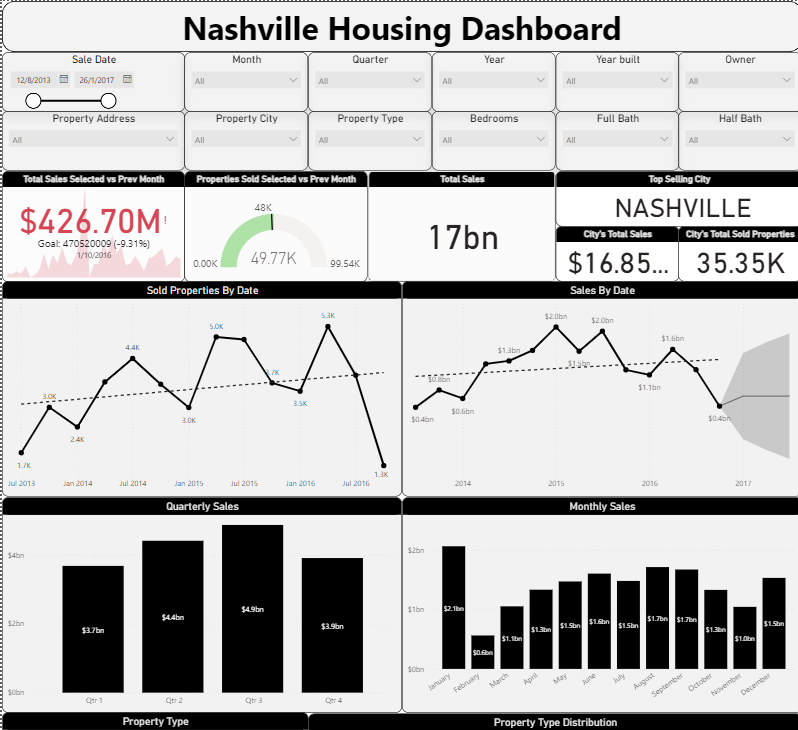
Built a user-friendly Power BI dashboard for the Nashville Housing project. Visualized housing trends, prices, locations, and demographics, enabling easy exploration and understanding of the real estate market
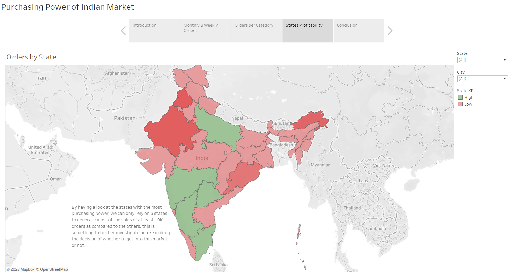
This analysis assesses the feasibility of expanding Ulti Pros' business to the Indian market based on purchasing power. Key performance indicators (KPIs) were set to evaluate demand. Findings indicate mixed success, with two out of three months meeting KPIs and profitable categories. Market entry requires strategic marketing and allocation strategies to leverage the substantial market potential and purchasing power
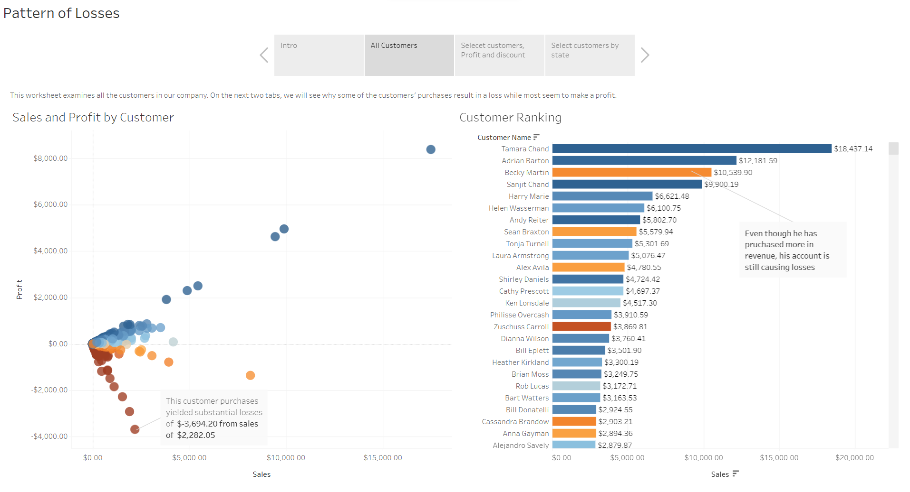
The Tableau dashboard for the Superstore project uncovers patterns of losses. Analysis reveals that discounts drive sales but negatively impact profits. Furthermore, there is no significant correlation observed between geography and profitability. Further investigation is advised to optimize profits and mitigate losses effectively
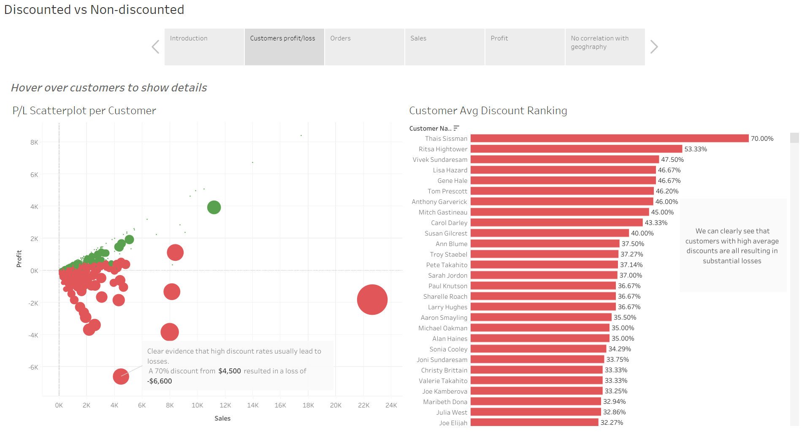
Using Tableau, the Superstore project analysis uncovers key insights:
1- Discounted orders are significantly less profitable than non-discounted orders.
2- Discounts boost sales but adversely affect profits.
3- Geography has minimal correlation with profit.
High discount rates consistently lead to losses, such as a 70% discount resulting in a loss of -$6,600 for a $4,500 order. Customers with high average discounts consistently generate substantial losses. Higher discounts drive sales but ultimately impact profits negatively, making discounted orders considerably less profitable than non-discounted ones
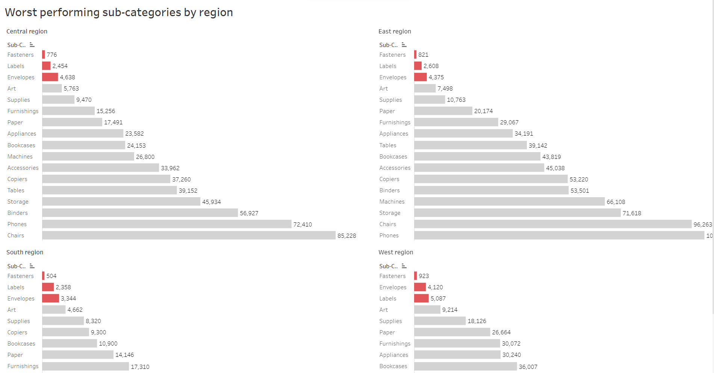
The Tableau dashboard for the Superstore project reveals the worst-performing sub-categories by region. Analyzing the data, specific sub-categories are identified as underperforming in different regions, providing valuable insights for targeted improvements and strategies
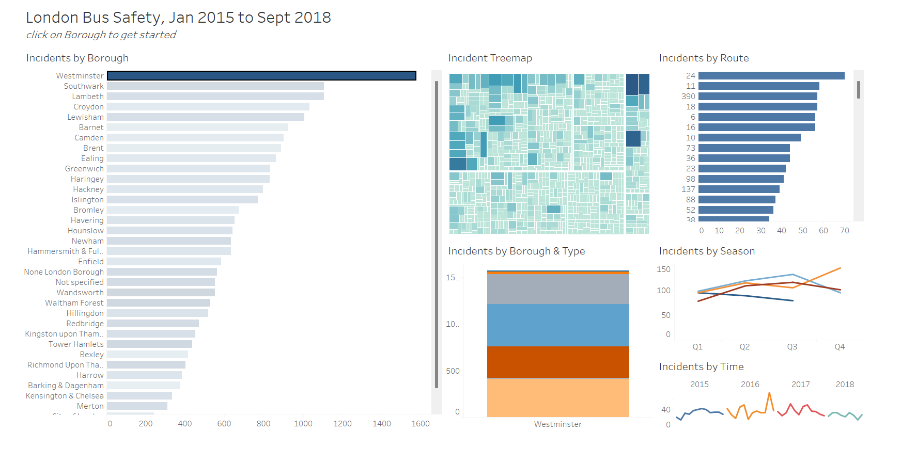
The Tableau project on London Bus Safety from January 2015 to September 2018 provides valuable insights:
Explore incidents by borough, route, borough & type, time, and season.
Uncover incident patterns and trends through interactive visualizations, including an incident treemap. Gain a comprehensive understanding of bus safety in London.
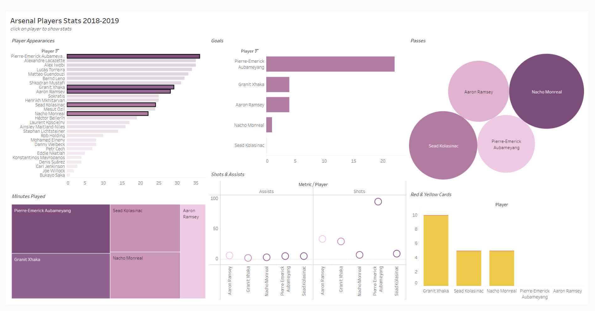
Delve into the Arsenal Players Stats project (2018-2019) visualized in Tableau. Explore player performance metrics, including appearances, goals, minutes played, red and yellow cards, shots, assists, and passes. Gain comprehensive insights into the team's performance and individual player contributions